第一章 基本知识
数字系统
模拟信号：连续
数字信号：离散
数制及其转换
基数：
位权：
十进制转二进制：
整数部分
小数部分
二进制转十进制：
二进制转八进制：
二进制转十六进制：
带符号二进制数的代码表述
原码
两种表示0的方式（原码、反码、补码） 0.0000 1.0000 0.0000 1.1111 0.0000 1.0000
不可以进行减法运算
反码
两种表示0的方式，注意和原码两种表示0的方式不一样
补码
任何有模的计量系统都可以将减法运算化为加法运算
0只有一种表示方式
可以只设置加法器
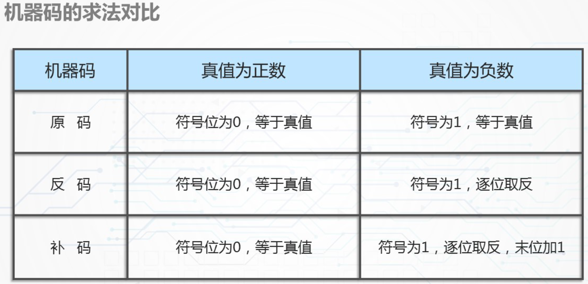
几种常用的编码
十进制数的二进制编码——BCD码
8421码
2421码
余3码
记忆2421码的一个捷径：d和9-d的两个数，其二进制形式互补！所以只需要记住0—4的2421码表示即可。
余3码：在原有0-9的二进制代码上再加上3，即0011
可靠性编码
奇偶校验码、格雷码
奇偶校验码
有奇校验和偶校验两种方式，校验位在被校验位的后面
奇校验：让整个校验码中
1的个数是奇数偶校验：让整个校验码中
1的个数是偶数
奇偶校验具有发现错误的能力，但是不具备对错误进行定位和纠正错误的能力，只能发现奇数个代码出现错误的能力，如果同时发生偶数个代码出错，则奇偶校验失效
格雷码
特点：任意两个相邻的数，其格雷码仅有一位不同
作用：避免代码产生错误
| 十进制数 | 格雷码 |
|---|---|
| 0 | 0000 |
| 1 | 0001 |
| 2 | 0011 |
| 3 | 0010 |
| 4 | 0110 |
| 5 | 0111 |
| 6 | 0101 |
| 7 | 0100 |
| 8 | 1100 |
| 9 | 1101 |
| 10 | 1111 |
| 11 | 1110 |
| 12 | 1010 |
| 13 | 1011 |
| 14 | 1001 |
| 15 | 1000 |
格雷码的计算过程：
注意可以考虑一下如何把格雷码转换回二进制数
第二章 逻辑代数基础
五个公理
八个定理
三个规则
逻辑表达式的形式变换
逻辑表达式的化简
逻辑代数的基本概念
逻辑函数的定义及公理
逻辑函数又称布尔代数
定义：
逻辑代数是一个封闭的代数系统，由一个逻辑变量集和与、或、非三种基本运算构成
五个公理：
交换律
结合律
分配律
01律
互补律：针对 逆 来定义
逻辑变量及基本运算
逻辑变量的取：0和1
基本运算：与、或、非

逻辑函数及逻辑函数间的相等
逻辑函数：随自变量变化的因变量
逻辑函数只有0和1两种取值
函数与变量之间的关系由与、或、非三种基本运算构成
逻辑电路的输出取决于：
逻辑变量的取值
电路本身的结构
注意这里并没有强调是组合逻辑电路还是同步时序逻辑电路，是Mealy型电路还是Moore型电路，所以再次明确，对于一般的电路而言，输出取决于逻辑变量的取值和电路本身的结构！
电路的逻辑功能描述可由相应的逻辑函数完全描述
对电路的分析借助抽象代数表达式
逻辑函数的相等：对于逻辑变量的任意一组取值，两个逻辑函数的取值都相同，则说明两个逻辑函数是相等的
判断逻辑函数相等的方法：
真值表法
代数法
逻辑函数表示法
逻辑函数表达式
真值表
卡诺图
逻辑函数表达式
逻辑函数表达式由
逻辑变量
与或非三种运算
括号（可有可无）
构成
在数字电路中，与（AND）、或（OR）和非（NOT）这三种逻辑运算的优先级如下：
非（NOT）运算的优先级最高。
与（AND）运算的优先级高于或（OR）运算。
真值表
真值表有 2n 行
卡诺图
图形描述逻辑函数，由表示逻辑变量所有组合的小方格所构成的平面图，可以与函数化简问题结合
逻辑代数的基本定理和规则
八个基本定理
注意定理7和定理8两个式子的区别
三个规则
代入规则
反演规则
对偶规则
在数字电路中，有三个常用的规则，分别是代入规则、反演规则和对偶规则。它们是简化和优化逻辑电路的重要工具。
代入规则：将一个逻辑表达式中的一部分替换成另一个等价的逻辑表达式。这个等价的逻辑表达式可以是经过简化后的表达式，或者是通过其他规则推导出来的表达式。代入规则的目的是推导出更多的表达式，通常情况下是简化逻辑表达式，使得它更易于理解和实现。例如，将一个逻辑表达式中的一部分替换成它的等价式，可以将逻辑电路中的器件数目减少，降低电路的复杂度和成本。
反演规则：将一个逻辑表达式中的输入反相，然后取反相的输出。所谓的反相是指：与运算变成或运算、或运算变成与运算、原变量变成反变量、反变量变成原变量，由此得到的新函数是原函数的反函数。注意要保持原函数中运算符号的优先顺序不变。这个规则可以用于优化逻辑电路中的非门数量，因为非门是逻辑电路中最简单的器件，但是它们也是造成信号延迟和功耗的主要因素之一。
对偶规则：将与（AND）和或（OR）运算符相互交换，保持原函数中的运算顺序不变，得到的新逻辑函数表达式就是原函数的对偶式。这个规则可以用于简化逻辑电路中的表达式，因为在有些情况下，使用与（AND）运算符比使用或（OR）运算符更加方便。对偶规则的优点是可以将一个表达式变成另一个等价的表达式，这使得电路实现更加灵活和高效。若函数的对偶式与自身相同，则该函数是自对偶函数。利用对偶规则可以使定理、公式的证明减少一半。
复合逻辑
由三种基本运算构成的复合运算来描述，相应的逻辑门称为复合门
与非门
或非门
与或非门
异或门
与非逻辑
或非逻辑
与非逻辑、或非逻辑都可以实现与或非三种基本逻辑
与或非逻辑
异或逻辑
当多个变量进行异或运算的时候，可用两两运算的结果再运算，也可以两两依次运算
异或运算的多个变量中如果有奇数个1则结果是1
异或运算的多个变量中如果有偶数个0则结果是0
同或逻辑
异或逻辑与同或逻辑既互为相反，又互为对偶！
各个复合逻辑门的符号
函数逻辑表达式的形式与变换
任何一个逻辑函数的表达式都不是唯一的。
两种基本形式
与或表达式
或与表达式
无论什么形式都可以转化成两种基本形式，而两种基本形式都不是唯一的，因此引入逻辑函数表达式的标准形式。
标准形式建立在最小项最大项的基础之上
最小项
n个变量可以构成2n个最小项
最小项下标的取值规则是取原变量为1
任意一个最小项，其相应变量有且仅有一种取值使这个最小项的值为1，最小项不同，使其值为1的变量取值也不同，任意一种变量取值不可能使两个最小项同时为1
相同变量构成的两个不同的最小项相与为0
n个变量的全部最小项相或为1
n个变量构成的最小项有n个相邻最小项
最大项
n个变量可以构成2n个最大项
最大项下标的取值规则是取反变量为1
任意一个最大项，其相应变量有且仅有一种取值使这个最大项的值为0，最小项不同，使其值为0的变量取值也不同
任意一种变量取值不可能使两个最大项同时为0
相同变量构成的两个不同的最大项相或为1
n个变量的全部最大项相与为0
n个变量构成的最大项有n个相邻最大项
最小项和最大项的关系
同一问题中，下标相同的最小项和最大项互为反函数
相同变量构成的最小项mi和最大项Mi之间存在互补关系

标准与或表达式：由若干最小项相或构成的逻辑表达式
标准或与表达式：由若干最大项相与构成的逻辑表达式
逻辑函数表达式的转换方法
代数转化法
真值表转换法
代数转换法
利用各种规则和定理化简
求一个函数的标准表达式的技巧：
求一个函数的标准与或表达式：
将函数表达式换成一般的与或表达式
反复使用
求一个函数的标准或与表达式：
将函数表达式换成一般的或与表达式
反复使用
真值表转换法
转换与或表达式（转换最小项表达式）
转换或与表达式（转换最大项表达式）
最大项表达式也仅仅是把输出为 0 的挑出来，下标其实没变。
函数的真值表与函数的两种标准表达式之间存在一一对应的关系，而任意一个逻辑函数的真值表都是唯一的
由此可见：任何一个逻辑函数的两种标准形式也是唯一的
逻辑函数化简
化简的起点：
或与表达式
与或表达式
化简方法：
代数化简法
卡诺图化简法
*列表化简法
代数化简法
与或表达式的化简
或与表达式的化简
与或表达式的化简
最简与或表达式：
与项个数最少
每个与项中变量个数最少
满足上述两个条件，相应逻辑电路所需门的数量和门的输入端个数均为最少，电路最经济
方法：
并项法
吸收法
消去法（定理4）
配项法
与或表达式化简举例
或与表达式的化简
最简或与表达式：
或项个数最少
每个或项中变量个数最少
或与表达式化简举例
两次对偶法
对“或-与”表达式表示的函数F求对偶，得到“与-或”表达式F‘
求出F’的最简“与-或”表达式
对F'再次求对偶，即可得到F的最简“或-与”表达式
两次对偶法举例
卡诺图化简法
最简与或表达式
几何图形上处在相邻、相对、相重位置的小方格代表的最小项为相邻最小项
1方格：表达式中对应的最小项
0方格：其余方格
可以将函数表达式化简成最小项表达式，然后再做出卡诺图
可以根据函数表达式直接写出卡诺图（该方法甚至更快一点）
利用画圈法合并卡诺图
做出函数卡诺图
在卡诺图中圈出函数全部的质蕴含项
从全部质蕴含项中找出所有的必要蕴含项
求函数的最简质蕴含项集
最简或与表达式
两次取反法
情况一：当给定逻辑函数为“与-或”表达式或标准“与-或”表达式时
作出函数 F 的卡诺图
合并卡诺图上的 0 方格，求出反函数 F’ 的最简“与-或”表达式
对 F’ 的最简“与-或”表达式取反，得到函数F的最简“或-与”表达式
情况二：当给定逻辑函数为“或-与”表达式或标准“或-与”表达式时
求出函数 F 的反函数 F‘ ，并作出 F’ 的卡诺图求出 F‘ 最简“与-或”表达式
合并卡诺图上的1方格，求出 F’ 最简“与-或”表达式
对 F‘ 的最简“与-或”表达式取反，得到 F 的最简“或-与”表达式
第四章 组合逻辑电路
研究的主要问题：
组合逻辑电路的分析与设计方法
组合逻辑电路设计中几个常见的实际问题及其处理
组合逻辑电路中的竞争和险象问题
逻辑电路的分类
组合逻辑电路
电路的输出仅取决于当时的输入，与过去的输入无关
是时序逻辑电路的组成部分
时序逻辑电路
电路的输出不仅取决于当时的输入，而且与过去的输入情况，也就是过去电路的状态有关
电路由组合电路和存储电路组成，具有对过去输入进行记忆的功能
电路中包含反馈回路，通过反馈回路使电路与“时钟”相关
电路的输出由电路当时的输入和状态（过去的输入）决定
同步时序逻辑电路：电路中有统一的定时信号，存储器件采用时钟控制触发器，电路状态在时钟脉冲控制下发生转换
异步时序逻辑电路：电路中没有统一的时钟信号同步，电路输入信号的变化将直接导致电路状态的变化
组合逻辑电路的分析
根据给定电路分析输入输出直接的逻辑关系
得出电路的逻辑功能的描述
评估电路的性能
进一步改进电路
步骤：
逻辑电路图
写出逻辑函数表达式
代数法：根据电路逐级写出各门的输出表达式，直至写出整个电路的输出逻辑表达式
表达式化简
真值表
分析逻辑功能
改进电路
举例1
举例2
组合逻辑电路的设计
逻辑设计是指根据问题要求完成的逻辑功能，求出在特定条件下实现给定功能的逻辑电路，又叫做逻辑综合。
步骤：
分析设计要求
列出真值表
最简逻辑表达式
表达式变换
修正表达式
逻辑电路图
关键：
正确理解设计要求
确定：
电路的输入和输出
函数与变量之间的逻辑关系
方法：
真值表法
规整、简单
不方便，变量个数较多的时候非常麻烦
分析法
通过对于设计要求的分析、理解，直接写出逻辑表达式
举例1：真值表法
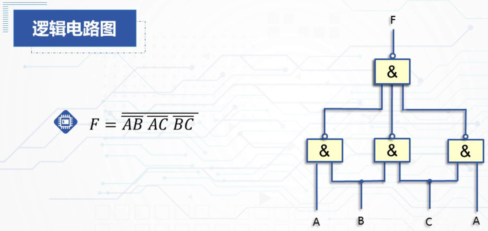
举例2：分析法
包含无关条件的组合逻辑电路设计
无关最小项：由于输入变量之间存在的相互制约，问题的某种特殊限定，使得逻辑函数与输入变量的某些取值组合无关，这些取值的组合称为无关最小项，也叫做无关最小项，任意项。
描述包含无关条件的逻辑问题的逻辑函数称之为包含无关条件的逻辑函数
当“最小项之和”表达式描述一个包含无关条件的逻辑问题时，表达式中是否包含无关项，以及对无关项是令其取值为1还是取值为0，并不影响函数的实际功能
利用无关项的随意性往往可以使逻辑函数得到更好地简化，从而使电路达到更简
举例1
利用无关项来进行化简，同时注意2421码的无关项排布规律
举例2
多输出函数的组合逻辑电路设计
由同一组输入变量产生多个输出函数
应该将多个输出函数一起考虑，而不是将多个输出函数分割
关键：在函数化简时找到各个输出函数的公用项，实现对逻辑门的共享
举例1
考虑另外一种化简方式：
举例2
模 2 运算中：
与==积
异或==和
无反变量提供的组合逻辑电路设计
问题的提出：
为了减少各个部件之间的连线，在某些问题的设计中，不提供反变量
若直接使用非门将原变量转化为反变量，则处理结果往往是不经济的
通常经过一定的变换，以便在无反变量提供的情况下，尽可能减少非门的数量，使逻辑电路尽可能简化
关于无反变量提供时如何使组合电路达到最简的问题，至今尚无一种系统而有效的方法，只能由设计者根据具体问题进行灵活处理
举例1
举例2

对该问题的逻辑描述是与血型编码直接相关的
0 方格的位置更加集中，所以对 0 方格进行化简
使得电路更简单的方法：
变化表达式
更换编码方案
险象
在前面的探讨中：我们仅仅考虑了信号稳定输入时的情况，没有考虑信号的延迟问题
信号经过任何逻辑门和导线都会产生时间延迟
延迟时间与以下因素有关：
信号经过的门的级数
具体逻辑门的时延大小
导线的长短
延迟时间对数字系统是一个有害的因素，会导致：
系统操作速度下降
引起线路中信号的波形参数变坏
产生竞争和险象的问题
竞争
由于延迟时间的影响，输入信号经过不同路径到达输出端的时间有先有后的现象
临界竞争
导致错误输出的竞争
非临界竞争
不产生错误输出的竞争
险象的定义
由竞争导致的错误输出信号
在组合逻辑电路中，险象是一种瞬态现象
表现为在输出端产生不应有的尖脉冲，暂时地破坏正常的逻辑关系
一旦瞬态过程结束，即可恢复正常的逻辑关系
险象的分类：
静态险象：在输入变化而输出不应该变化的情况下，输出端产生了短暂的错误输出
动态险象：在输入变化而输出应该变化的情况下，输出在变化过程中产生了短暂的错误输出
按照错误输出的极性划分：
0 型险象：错误输出信号是负脉冲
1 型险象：错误输出信号是正脉冲
险象的判断
代数法
检查函数表达式中是否含有存在具备竞争条件的变量，即某个变量同时以原变量和反变量的形式出现在函数表达式中
若存在某个满足条件的变量，则消去函数中其他的变量，看函数表达式是否会变成
举例1
举例2
卡诺图法
仅仅适用于与或表达式
步骤：
做出函数的卡诺图
画出和函数表达式中各个与项相对于的卡诺圈
若卡诺圈直接存在相切的关系，则该电路可能产生险象
举例1
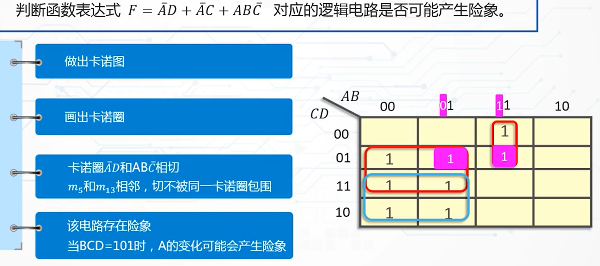
判断组合逻辑电路中的险象和竞争的时，一定不能改变电路的结构，即不对原来的电路作任何的化简和变换等
险象的消除
增加冗余项
增加冗余项的方法：
或上冗余的与项
与上冗余的或项
冗余项的选择：
代数法
卡诺图法：在函数的卡诺图上增加多余的卡诺圈
代数法举例
卡诺图法举例1
卡诺图法举例2
增加惯性延时环节
在组合电路的输出端连接一个惯性延时环节，通常采用RC电路作为惯性延时环节
选通法
选通法不必增加任何器件，仅仅是利用选通脉冲的作用，从时间上加以控制，使输出避开险象
第三章 集成门电路与触发器
简单逻辑门电路
正逻辑和负逻辑
不同规定可使统一逻辑电路具有不同的逻辑功能
对于同一个电路可以采用正逻辑也可以采用负逻辑
正逻辑和负逻辑不涉及逻辑电路本身的结构与性能的好坏
正逻辑”与门“等价于负逻辑”或门“
触发器概述
触发器的结构
有两个互补的输出端
有两个稳定状态”1“和”0“
输入信号不发生变化时，触发器状态稳定不变
在一定的输入信号作用下，触发器可以从一个稳定状态转移到另一个稳定状态，输入信号撤销后，保持新的状态不变
触发器的状态：
现态
次态
触发器的常用描述方法：
功能表
状态表
状态图
次态方程
激励表
卡诺图
RS触发器
与非门RS触发器
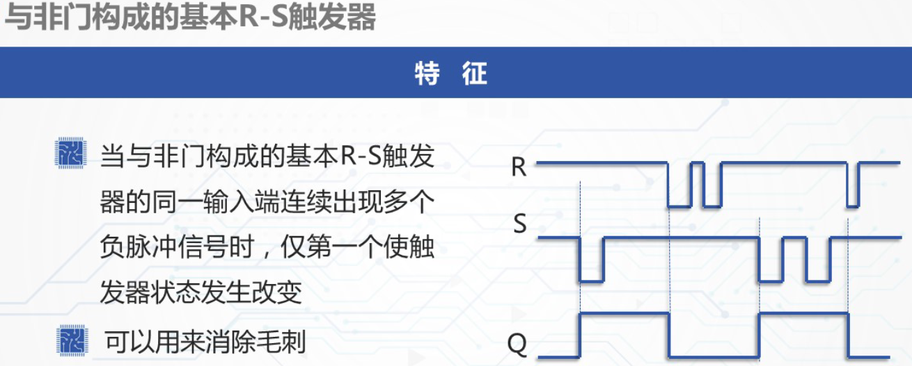
或非门RS触发器
与非门RS触发器和或非门RS触发器
钟控触发器
钟控RS触发器
钟控RS触发器和或非门构成的RS触发器功能一致
钟控D触发器
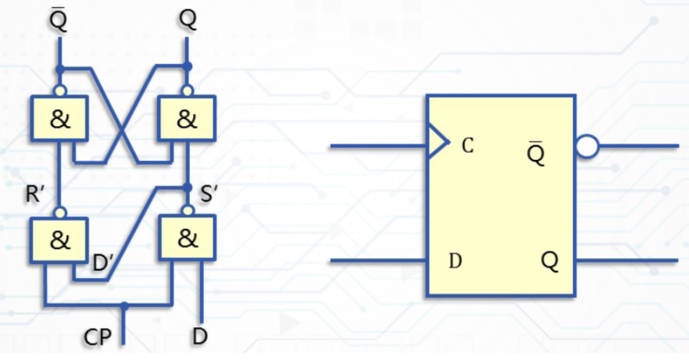
钟控JK触发器
钟控T触发器
触发器规律总结
与非门RS触发器看R，11不变，不可出现00
或非门RS触发器看S，00不变，不可出现11
钟控RS触发器与或非门相同，注意仅在CP=1时有效
钟控D触发器看D，是0置0，是1置1
钟控JK触发器，看J，是0置0，是1置1，00不变，11翻转
钟控T触发器看T，是0不变，是1翻转
时序逻辑电路概述
CP=0，触发器保持状态不变
CP=1，触发器在输入信号作用下发生变化
触发器状态转移被控制在一个约定的时间间隔内，而不是控制在某一时刻
空翻现象
同一个时钟脉冲作用期间触发器状态发生两次或两次以上变化的现象
空翻现象将造成状态的不确定和系统工作的混乱，这是不允许的。
主从RS触发器
约束方程和或非门RS触发器相同
总结：
前沿采样
后沿定局
状态变化是在时钟脉冲的后沿
无”空翻“
主从JK触发器
和钟控JK触发器逻辑功能完全一致
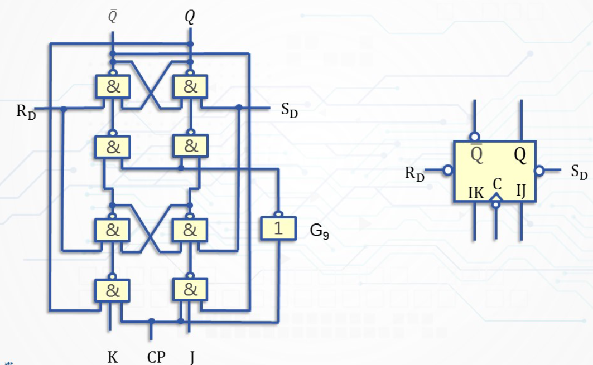
维持阻塞触发器
维持阻塞D触发器
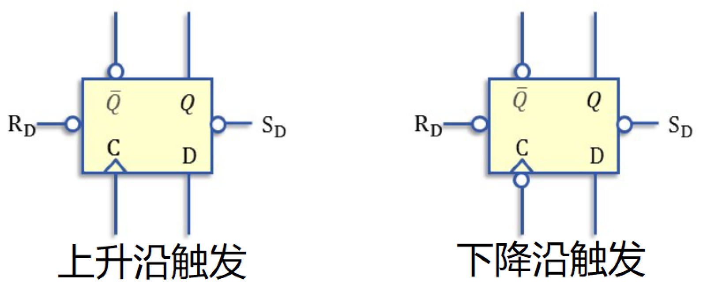
边沿触发器就是维持阻塞触发器
第五章 同步时序逻辑电路
要点：
同步时序逻辑电路分析的基本方法
同步时序逻辑电路设计的基本方法
同步时序逻辑电路中无关状态的分析和处理
时序逻辑电路：若逻辑电路在任何时刻产生的稳定输出信号不仅与电路该时刻的输入信号有关还与电路过去的输入信号有关，则称为时序逻辑电路。
时序逻辑电路的分类：
电路的工作方式
电路输出对输入的依从
输入信号的形式
工作方式
电路状态的改变依赖于输入信号和时钟脉冲信号
在研究同步时序逻辑电路时，通常不把同步时钟信号作为输入信号处理，而是把它当作是一种默认的时间基准
依从关系
输入信号的形式
脉冲型
时钟脉冲
同步输入脉冲
异步输入脉冲
电平型
同步输入电平
异步输入电平
时序逻辑电路的描述
逻辑函数表达式
状态图
状态表
时间图
逻辑函数表达式

举例
状态表
状态图
时间图
同步时序逻辑电路的分析
关键：找出电路状态和输出随输入变化而变化的规律，以便确定其逻辑功能
分析的方法：
表格法
代数法
表格法
逻辑电路图
输入
输出
组合逻辑电路
时序逻辑电路
Mealy
Moore
输出函数与激励函数表达式
次态真值表
状态表和状态图
描述功能
表格分析法举例
注意：这是一个特殊的Moore型电路，它是有输出的，不过不是Z或者F，而是y1和y2！
这个特殊的输出也导致了列出真值表和状态图的时候没有单独列出输出。
时间图的画法：
假设电路的初始状态，并拟定一典型的输入序列。（大概估计一下电路的功能，拟定典型输入序列的时候就往这个方向靠）
做出状态和响应序列
根据响应序列画出波形图
代数法
代数分析法举例
前面与表格分析法一致
代数分析法举例
两个D触发器，相同的时钟端，是同步时序逻辑电路
三个或非门
输入：X，输出：Y
电路的状态：y1，y2
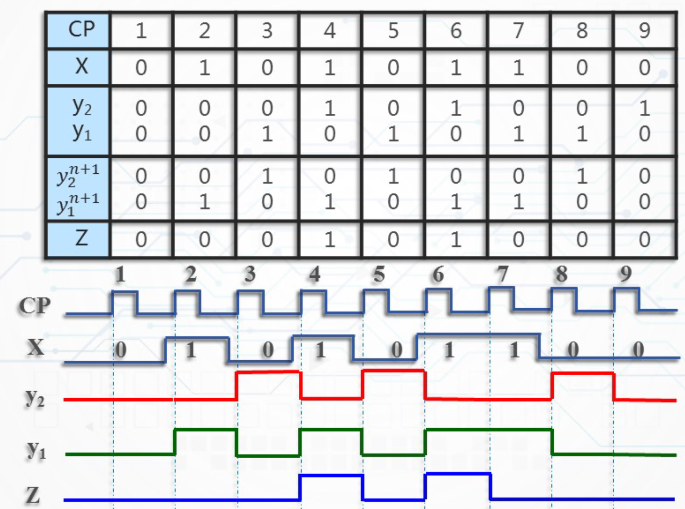
同步时序逻辑电路的设计
根据特定的逻辑要求设计出能实现逻辑功能的时序逻辑电路
使用尽可能少的触发器和逻辑门完成预定的逻辑要求
完全确定同步时序逻辑电路：电路在不同的输入取值下都有确定的次态和输出
不完全确定同步时序逻辑电路：电路中存在不确定的次态或者输出，即某些状态在某些输入取值下的次态或输出是不确定的
由于状态图和状态表可以直观、清晰、形象地反映同步时序逻辑电路的逻辑特性，所以设计的第一步是根据设计要求，抽象出电路的输入、输出和状态之间的关系
原始状态图和状态表
正确清晰的反应题意
对于是否是最简不做要求
状态化简
状态编码（二进制的状态表）
根据二进制状态表，确定所要使用的触发器，根据触发器和触发器的激励表，得到输出函数和激励函数
根据输出函数和激励函数的表达式作出逻辑电路图
当电路包含冗余状态时，要对这些状态的处理结果加以讨论
建立原始状态图和原始状态表
根据对设计要求的文字描述，抽象出电路的输入、输出以及状态之间的关系，形成状态图和状态表
一般是先画状态图，再作出状态表，因为状态图比状态表更加灵活
建立原始状态图的步骤
确定是Mealy型还是Moore型
设立初始状态
根据需要增加状态
需要记忆和区分的信息量？
转向已有状态
增加新的状态
确定电路各个时刻的输出
时序逻辑电路的功能是通过输出对输入的响应来确定的
在建立原始状态图的时候，必须确定各个时刻的输出值
在Moore型电路中，应指明每种状态下的输出
在Mealy型电路中，应指明从每一个状态出发，在不同输入的作用下的输出值
状态数目能否达到最简无关紧要，因为可以再对他进行状态化简。此时应该把清晰正确地描述设计要求放在第一位
举例1

考虑一个序列检测器的时候，要注意序列首尾是否一致，当序列首尾相同的时候，要考虑序列是否是可重叠的
Mealy型一般比Moore型需要的状态数少
Mealy型不一定比Moore型需要的触发器少
举例2
代码检测器的特点是输入信号是按位分组的，每组的检测过程相同，即一组检测完成之后，接着进行下一组的检测。
使用Mealy型电路设计代码检测器
低位在上，高位在下
代码检测器和序列检测器的主要区别是什么？
代码检测器每读入X位得到一个结果
序列检测器时不时的得到一个结果
使用Moore型电路设计代码检测器
如果是先输入高位再输入低位，如何做Mealy状态图？
举例2
注意，这也是一个特殊的Mealy型电路，输出就是y2和y1本身。

在本题中，我们直接通过题目所给的条件，得到了状态表，然后由状态表得到了状态图
对于不同的情况要不同对待，合理地省略掉某些步骤
原始状态图的化简
电路状态的多少决定了所需触发器数量的多少，应该尽可能地使描述电路状态的状态图和状态表中的状态尽可能的少
状态化简：从原始状态表中消去多余状态，得到一个描述给定逻辑功能的包含状态数目最少的状态表，即最简状态表或者最小化状态表。
状态化简的目的是简化电路结构
状态数和所需触发器数量的关系
状态化简的常用方法：
观察法
输出分类法
隐含表法
隐含表法
隐含表法是建立在等效状态这个概念的基础之上的。
等效状态：对于状态表中的两个状态，如果对于任何可能的输入序列，从这两个状态出发，所得到的输出相应序列完全相同，则这两个状态是等效的，称这两个状态是等效对。
等效状态的判断：
两个状态是等效对的条件为在一位输入的各种取值组合下，满足两条：
输出相同
次态属于下列情况之一：
次态相同
次态交错或者为各自现态
次态循环或者为等效对
举例
等效具有传递性！
等效类：由若干彼此等效的状态构成的集合。一般来说，两个及以上的状态都可以组成等效类，一个状态也可以组成等效类。
在同一个等效类中，任意两个状态都是等效的。
最大等效类：不被别的等效类包含的等效类。
最大并不是指它包含的状态数最多，而是指它的独立性。
如何利用隐含表进行状态化简？
做隐含表
直角三角形阶梯状网格
每个方格代表一个状态对
找等效对
顺序比较
等效打√
不等效打×
如果取决于其他的状态对，就填写其他的状态对
顺序比较完成后，进行关联比较
观察待定比较对
找到最大等效类
依据等效状态的传递性
各个最大等效类中不存在同一个状态
每个状态都必须属于一个最大等效类
状态合并
举例
状态编码
给最小化状态表中用字母或者数字表示的状态指定一个二进制编码，形成二进制状态表，也称状态分配或者状态赋值。
确定编码的长度，即所需触发器的个数
寻找最佳的或者接近最佳的状态分配方案，以便使所设计的时序电路最简单，这里的最简单指的是电路中的组合逻辑部分
二进制代码的位数：
常用的方法：相邻分配法
相邻分配法的主要思想是：在选择状态编码到时候，尽可能使激励函数和输出函数在卡诺图上的“1”方格处在相邻位置，从而有利于激励函数和输出函数的化简。
相邻分配法的状态编码原则：
次态相同，现态相邻：相同输入条件下，具有相同次态的现态应尽可能分配相邻的二进制代码
同一现态，次态相邻：相同输入条件下，同一现态的次态应尽可能分配相邻的二进制代码
输出相同，现态相邻：对应每一种输入取值均具有相同输出的现态应尽可能分配相邻的二进制代码
三条原则自上而下逐个考虑
一般将初始状态分配0状态
多种方案任选其一即可
举例
确定激励函数和输出函数
根据已经确定的二进制状态表和选定的触发器，求出这个触发器的激励函数表达式和电路的输出函数表达式并化简
触发器的激励表：
激励表反映了触发器从现态转移到某种次态时，对输入条件的要求
把触发器的现态和次态作为自变量，而把触发器的输入作为因变量
四种时钟控制触发器的激励表
步骤
列出激励函数和输出函数真值表
用卡诺图化简后写出最简表达式
举例

用钟控D触发器实现上述电路
在同步时序逻辑电路的设计中，采用不同的触发器会导致激励函数不同，使得设计出来的电路中的组合逻辑电路部分复杂度不同。
同步时序逻辑电路设计举例
举例1
该问题对电路所要求的状态数目和状态转换关系十分清楚，故可直接做出计数器的二进制状态图和二进制状态表
举例2
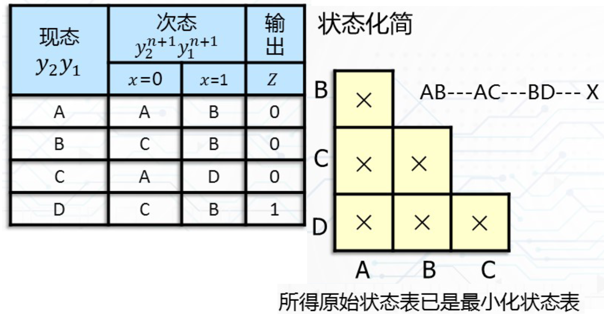
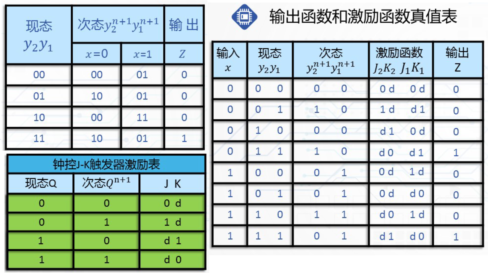
自启动问题
数字电子技术基础中的自启动：数字电路中的状态机在上电时，无论它处于什么初始状态，都会自动经过有限次的跳变后，最终进入设定的状态中。
当电路中包含多个无效状态的时候，往往将无效状态构成的集合称作是状态的无效序列
正常工作下的状态集合称作是状态的有效集合
要讨论在无效状态的时候，电路的输出和转移
讨论：
电路是否具有自恢复（自启动）功能
电路万一偶然进入无效状态，如果能在输入信号和时钟脉冲的作用下自动进入到有效状态，则称其具有自恢复功能，否则，称为挂起
若存在挂起，则必须修正
电路是否会产生错误的输出信号
电路万一处在无效状态下，是否会在输入信号和时钟脉冲的作用下产生错误输出信号
若存在错误信号，则必须修正
讨论：如果根据化简结果得到的无效状态的转移关系如下表，结果又如何，又该如何修正？
第六章 异步时序逻辑电路
异步时序逻辑电路概述
特点
电路中没有统一的同步时钟脉冲信号，电路状态的改变是外部输入信号变化直接作用的结果
电路的记忆功能可以由触发器实现，也可以由延时加反馈实现
无论输入信号是脉冲信号还是电平信号，对其变化均有一定约束
分类
根据电路结构和输入信号形式分类
脉冲异步时序逻辑电路
电平异步时序逻辑电路
根据电路输出与输入的关系分类
Mealy型
Moore型
脉冲异步时序逻辑电路分析与设计
脉冲异步时序逻辑电路结构
结构模型
输入信号的要求
在脉冲异步时序电路中，引起触发器状态变化的脉冲信号是由输入端直接提供的。为了保证电路可靠地工作，输入脉冲信号必须满足如下约束条件：
输入信号为脉冲信号 客观上两个或两个以上脉冲不可能 “同时”，在没有时钟脉冲同步的情况下，由不可预知的时间延迟造成的微小时差可能导致电路产生错误的状态转移。
输入脉冲的宽度必须保证触发器可靠翻转
输入脉冲的间隔必须保证前一个输入脉冲引起的电路响应完全结束后，下一个脉冲才可以来
不允许在两个或两个以上输入端同时出现脉冲
注意：由于不允许两个或两个以上输入端同时出现脉冲，并且输入端无脉冲出现时，电路状态不会发生变化。因此，对n个输入端的电路，一位输入只允许出现n+1种取值组合，其中有效输入种取值组合为n种。
对n个输入的异步时序逻辑电路，只需考虑各自单独出现脉冲的n种情况，而不像同步时序逻辑电路中那样需要考虑2n种情况。
例如：假定电路有x1、x2和x3共3个输入，并用取值1表示有脉冲出现，则一位输入允许的输入取值组合只有000、001、010、100共4种，其中有效输入取值组合只有后面3种情况。
输出信号的形式
脉冲异步时序逻辑电路的输出信号可以是脉冲信号也可以是电平信号。
若电路结构为Mealy型，则输出为脉冲信号
因为输出不仅是状态变量的函数，而且是输入的函数，而输入为脉冲信号，所以，输出一般是脉冲信号
若电路结构为Moore型，则输出是电平信号
因为输出仅仅是状态变量的函数，所以，输出值被定义在两个间隔不定的输入脉冲之间，即由两个输入脉冲之间的状态决定
脉冲异步时序电路与同步时序电路相同点：
状态的改变都依赖于外加脉冲
存储元件都是触发器
脉冲异步时序电路与同步时序电路的差异：
脉冲异步时序电路无外加的统一的时钟脉冲
输入变量x为脉冲信号，由输入脉冲直接引起电路的状态改变
由次态逻辑产生各触发器控制输入信号(Y1,Y2 ,...,Yr) ，而且还产生时间有先后的各触发器的时钟控制信号(CLK1, CLK1, ...,CLKr)
脉冲异步时序逻辑电路的分析
分析方法
分析方法与同步时序逻辑电路大致相同。分析过程中同样采用状态表、状态图、时间图等作为工具。
当存储元件采用时钟控制触发器时，对触发器的时钟控制端应作为激励函数处理。仅当时钟端有脉冲作用时，才根据触发器的输入确定状态转移方向，否则，触发器状态不变
根据对输入的约束，分析时可以排除两个或两个以上输入端同时出现脉冲以及输入端无脉冲出现情况
据此，可使状态图和状态表简化
步骤
写出电路的输出函数和激励函数表达式
列出电路次态真值表或次态方程组
作出状态表和状态图
用文字描述电路的逻辑功能（必要时画出时间图）
举例
举例1
举例2
注意：异步电路的时钟控制端视为激励函数处理！！！
举例3
举例4
问：为什么无时钟的情况下会被认为是异步时序逻辑电路？
两个触发器没有统一的时钟端，所以是异步时序逻辑电路
注意有n个输入变量时，合法的输入只有n个。
注意表格分了两栏，“输入”、“现态”，其中“现态”是触发器的原始状态，也就是说触发器的原始状态也是一种我们事先不知道的变量。
注意观察触发器是上升沿触发还是下降沿触发。
同时发现，没有时钟端的情况比较好处理，不需要考虑上升沿触发或者下降沿触发的问题。
第七章 中规模通用集成电路及应用
集成电路由SSI发展到MSI、LSI和VLSI，使单个芯片容纳的逻辑功能越来越强。
一般来说,在SSI中仅是基本器件(如逻辑门或触发器)的集成，在MSI中已是逻辑部件(如译码器、寄存器等)的集成，而在LSI和VLSI中则是一个数字子系统或整个数字系统(如微处理器)的集成。
采用中、大规模集成电路组成数字系统具有体积小、功耗低、可靠性高等优点，且易于设计、调试和维护。
本章知识要点
熟悉常用中规模通用集成电路的逻辑符号、基本逻辑功能、外部特性和使用方法
用常用中规模通用集成电路作为基本部件，恰当地、灵活地、充分地利用它们完成各种逻辑电路的设计，有效地实现各种逻辑功能
常用中规模组合逻辑电路
使用最广泛的中规模组合逻辑集成电路有二进制并行加法器、译码器、编码器、多路选择器和多路分配器等。
二进制并行加法器
二进制并行加法器：是一种能并行产生两个二进制数算术和的组合逻辑部件。
按其进位方式的不同可分为：
串行进位二进制并行加法器
超前进位二进制并行加法器
串行进位二进制并行加法器
由全加器级联构成，高位的进位输出依赖于低位的进位输入
超前进位二进制并行加法器
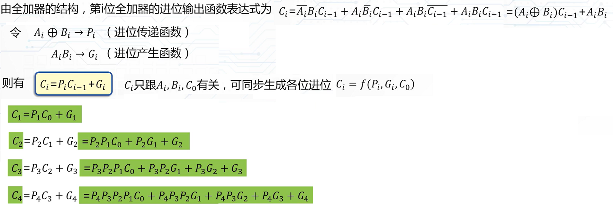
注意进位传递函数和进位产生函数的计算方法
典型芯片
应用举例
二进制加法运算
代码转换
二进制减法运算
二进制乘法运算
十进制加法运算
举例1
举例2
注意是可以自己加入一个功能选择变量的！
注意取反加一还可以如上图所示那么操作，非常的巧妙！
取反就是与 1 异或
举例3
实现乘法就要把乘法转换成加法
举例4
题目中虽然没说要几个4位并行加法器，但是我们可以选择两个！
同时要注意两个余三码相加的特点，该如何处理两个余三码相加
译码器
译码器(Decoder)和编码器(Encoder)是数字系统中广泛使用的多输入多输出组合逻辑部件。
译码器的功能是对具有特定含义的输入代码进行“翻译”，将其转换成相应的输出信号。
二进制译码器
二-十进制译码器
数字显示译码器
二进制译码器
二进制译码器：能将n个输入变量变换成2n个输出函数，且输出函数与输入变量构成的最小项具有对应关系的一种多输出组合逻辑电路。
特点：
二进制译码器一般具有n个输入端、2n个输出端和一个(或多个)使能输入端
使能输入端为有效电平时，对应每一组输入代码，仅一个输出端为有效电平，其余输出端为无效电平（值与有效电平相反)
有效电平可以是高电平(称为高电平译码)，也可以是低电平(称为低电平译码)
典型芯片74138
常见的MSI二进制译码器有:
2-4线(2输入4输出)译码器
3-8线(3输入8输出)译码器
4-16线(4输入16输出)译码器
二进制译码器74138
这是一种典型的3-8线的译码器
带有开口的是引脚阵列，蓝色的是逻辑符号
使能端 S3 和 S2 是带非门的，也就是说要想使芯片正常工作，使能端的输入序列应该是001
二-十进制译码器
功能：将4位BCD码的10组代码翻译成10个十进制数字符号对应的输出信号。
典型芯片7442
常用芯片7442是一个将四位8421码转换成十进制数字的译码器

该译码器的输出为低电平有效。其次，对于8421码中不允许出现的6个非法码(1010～1111)，译码器输出端均无低电平信号产生，即译码器对这6个非法码拒绝翻译。
数字显示译码器
功能：数字显示译码器是驱动显示器件(如荧光数码管、液晶数码管等)的核心部件，它可以将输入代码转换成相应数字，并在数码管上显示出来。
常用的数字显示译码器有：
七段数字显示译码器(Seven-segment Decoders)
八段数字显示译码器(Eight-segment Decoders)
数字显示译码器74LS47
译码器应用举例
举例1

从这个例子就可以体会出来什么是最小项和输出端对应。
二进制译码器：能将n个输入变量变换成2n个输出函数，且输出函数与输入变量构成的最小项具有对应关系的一种多输出组合逻辑电路。
本例说明译码器也可以作为实现全减器的元件
举例2
注意观察如何用两个3-8线译码器做出应对4个变量的译码器
将其中一个变量作为译码器的状态变量输入，其余三个作为参数变量输入。用状态变量来判断该哪个译码器工作，不工作的译码器是没有输出的。
举例2的拓展
某些巧合的时候可以只使用一个3-8译码器就达到4-16译码器的效果
编码器
功能：编码器的功能恰好与译码器相反，是对输入信号按一定规律进行编排，使每组输出代码具有其特定的含义。
类型：编码器按照被编信号的不同特点和要求，有各种不同的类型：
二-十进制编码器
优先编码器
二-十进制编码器
功能：将十进制数字0～9分别编码成4位BCD码
这种编码器由10个输入端代表10个不同数字，4个输出端代表相应BCD代码。
注意：二-十进制编码器的输入信号是互斥的，即任何时候只允许一个输入端为有效信号。
最常见的有8421码编码器，例如，按键式8421码编码器：
ABCD为代码输出端
S为使用输出标志
当按下某一输入键时，在ABCD输出相应的8421码
当按下I0～I9中任一个键时，S为1，表示输出有效，否则S为0，表示输出无效
优先编码器
功能：识别输入信号的优先级别，选中优先级别最高的一个进行编码，实现优先权管理。
优先编码器是数字系统中实现优先权管理的一个重要逻辑部件。它与上述二-十进制编码器的最大区别是，优先编码器的各个输入不是互斥的，它允许多个输入端同时为有效信号。
优先编码器的每个输入具有不同的优先级别，当多个输入信号有效时，它能识别输入信号的优先级别，并对其中优先级别最高的一个进行编码，产生相应的输出代码。
典型芯片
常见MSI优先编码器74LS148的引脚排列图和逻辑符号：
输入和输出的有效工作电平均为低电平。
在输入端中，下角标号码越大的优先级越高。
应用举例
略
多路选择器和多路分配器
多路选择器和多路分配器是数字系统中常用的中规模集成电路。基本功能是完成对多路数据的选择与分配。此外，还可完成数据的并串转换、序列信号产生等多种逻辑功能。
多路选择器
多路选择器又称数据选择器或多路开关，常用MUX表示。它是一种多路输入、单路输出的组合逻辑电路。
逻辑功能：从多路输入中选中某一路送至输出端，受选择控制量控制。通常，一个具有2n路输入和一路输出的多路选择器有n个选择控制变量，控制变量的每种取值组合对应选中一路输入送至输出。
多路选择器的构成思想相当于一个单刀多掷开关。
典型芯片
四路数据选择器74153
用具有n个选择变量的多路选择器实现n个变量函数
一般方法：
将函数的n个变量依次连接到MUX的n个选择变量端，并将函数表示成最小项之和的形式。若函数表达式中包含最小项mi，则相应MUX的Di接1，否则Di接0。
应用举例
举例1
举例2
Di 的不同取值可以实现不同的函数表达式
注意：这种三变量函数只有四个输出，所以需要将一个变量作为状态输入，将另外两个作为参数输入。
多路分配器
多路分配器(Demultiplexer)又称数据分配器，常用DEMUX表示。 多路分配器的结构与多路选择器相反，是一种单输入、多输出组合逻辑部件，由选择控制变量决定输入从哪一路输出。如图所示为4路分配器的逻辑符号。
应用举例
多路分配器常与多路选择器联用，实现多通道数据分时传送。利用一根数据传输线分时传送8路数据的示意图如下。
举例
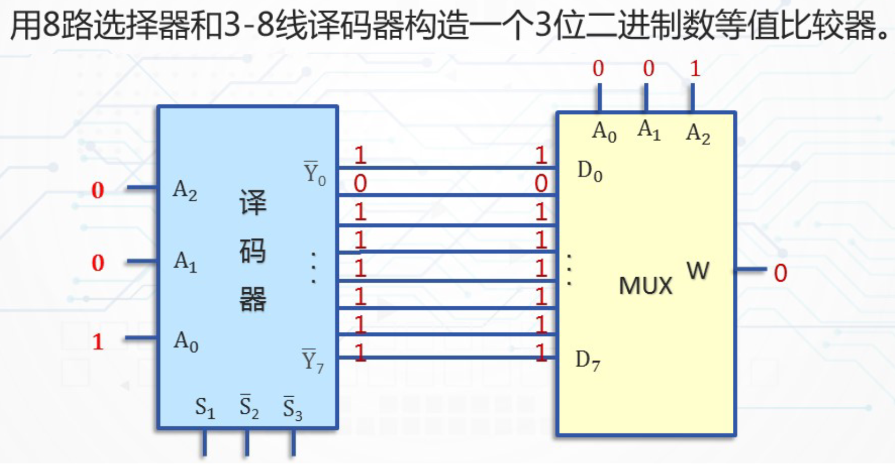
若两个三位二进制数相等，则多路选择器的输出W=0，否则W=1。
常用中规模时序逻辑电路
数字系统中最典型的时序逻辑电路是计数器和寄存器。
由于计数器和寄存器的应用十分广泛，所以，被制作成中规模集成电路的定型产品供用户选用。要求在掌握外部特性后，根据需要对器件进行合理选择、灵活使用。
计数器
广义地说，计数器是一种能在输入信号作用下依次通过预定状态的时序逻辑电路。
就常用的集成电路计数产品而言，可以对其定义如下：计数器：是一种对输入脉冲进行计数的时序逻辑电路，计数的脉冲信号称作“计数脉冲”。
计数器中的“数”是用触发器的状态组合来表示的。计数器在运行时，所经历的状态是周期性的，总是在有限个状态中循环，通常将一次循环所包含的状态总数称为计数器的“模”。
按工作方式可分为同步计数器和异步计数器
按进位制可分为二进制计数器，十进制计数器，任意进制计数器
按功能可分为加法计数器，减法计数器，加/减可逆计数器等
一般具有计数、保存、清除、预置等功能。
典型芯片74193
常用同步计数器芯片有4位二进制同步可逆计数器74193，该计数器具有清除、预置、累加计数、累减计数等功能。
异步清零：直接使用清理CLR，无视时钟信号
同步清零：输入端输入四个0，利用时钟清零
同步可逆计数器74193的“模”为16，利用计数器的清除、预置等功能，可以很方便地构成模M＜16的计数器。也可以利用计数器的进位和借位输出脉冲，将多个74193计数器级联，构成模M＞16的计数器。
此外，计数器除了实现对输入脉冲进行计数的功能外，在数字系统中常用来构成脉冲分配器和序列信号发生器等逻辑部件。
模10计数器
注意高位是 QD
模147计数器
注意高位是 QD
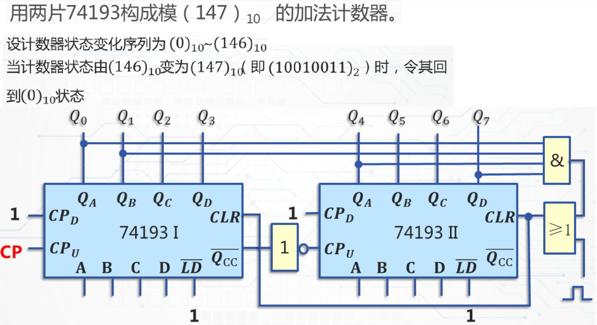
寄存器
寄存器：数字系统中用来存放数据或运算结果的一种常用逻辑部件。
功 能：
接收数据
保存数据
传送数据
左、右移位
串、并输入
串、并输出
预置
清零
典型芯片74194
S1 、S2都是1，并行输入，也是输入端 DCBA 唯一起到作用的时候
S1 、S2都是0，保持不变
具体往哪个方向移动是看 S ，移动之后补充的是 0 还是 1 要看 DR 和 DL 的值
模8计数器
序列发生器
序列发生器另解
利用计数器的计数功能，控制8路选择器按照 0 — 7 的顺序输出
第八章 可编程逻辑器件
PLD的基本概念
可编程逻辑器件(Programmable Logic Device，简称PLD)。
数字系统中常用的大规模集成电路可分为三类
非用户定制电路(Non-custom design IC)
全用户定制电路(Full-custom design IC)
半用户定制电路(Semi-custom design IC)
可编程逻辑器件(Programmable Logic Device，简称PLD)属于半用户定制电路。PLD具有结构灵活、性能优越、设计简单等特点，在不同应用领域中受到广泛重视，是构成数字系统的理想器件。
PLD是70年代开始发展起来的一种大规模集成电路。一片PLD所容纳的逻辑门可达数百、数千甚至更多，其逻辑功能可由用户编程指定。
PLD适宜于构造小批量生产的系统，或在系统开发研制过程中使用。
PLD的基本结构
PLD的基本结构由与阵列和或阵列组成，或阵列的输出是输入变量的与－或函数。
阵列中输入线和输出线的交点通过逻辑元件相连接。这些元件是接通还是断开，可由厂家决定，或由用户决定。
PLD“与”阵列的输入为外部输入原变量及在阵列中经过反相后的反变量。它们连接到各个与门的输入端，并在各与门的输出端产生某些输入变量的“与”项。 这些“与”项按要求连接到相应或门的输入端，在每个或门的输出端产生输入变量的“与-或”函数表达式。
在基本结构的基础上，附加一些其他逻辑元件，如输入缓冲器、输出寄存器、内部反馈、输出宏单元等即可构成各种不同的PLD器件。
PLD的电路表示法
对于PLD器件，通常很难用逻辑电路的一般表示法描述其内部结构。为此，对描述PLD基本结构的逻辑符号和规则作出约定。
与门和或门
3输入与门的两种表示法。传统表示法(图(a))中与门的3个输入A、B、C在PLD表示法(图(b))中称为3个输入项，而输出D称为“与”项。同样，或门也采用类似方法表示。
输入缓冲器
典型输入缓冲器的PLD表示法如下。它的两个输出B、C是其输入A的原和反。
连接方式
PLD阵列交叉点上的三种连接方式如图(a)所示。
实点“· ”表示硬线连接，即固定连接
“×”表示可编程连接
既没有“×” 也没有“· ”的表示两线不连接
如图(b)，输出F=A·C。
与门不执行任何功能时的连接表示
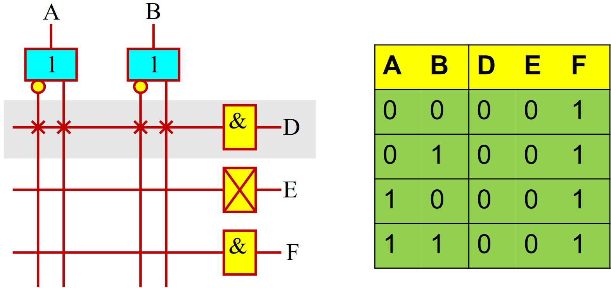
输出为D的与门连接了所有的输入项，其输出方程为 D = 0 。
用标有“×”标记的与门输出来表示所有输入缓冲器输出全部连到某一“与”项的情况，如图中输出E。
输出F表示无任何输入项与其相连。因此，该“与”项总是处于“浮动”的逻辑“1”。
低密度可编程逻辑器件
根据PLD中阵列和输出结构不同，常用的低密度PLD有4种主要类型：
可编程只读存储器(PROM)
可编程逻辑阵列(PLA)
可编程阵列逻辑(PAL)
通用阵列逻辑(GAL)
存储器
存储器(Memory)是数字计算机和其他数字系统中存放信息的重要部件。随着大规模集成电路的发展，半导体存储器因其具有集成度高、速度快、功耗小、价格低等优点而被广泛应用于各种数字系统中。
半导体存储器按功能可分为两大类：
随机存取存储器RAM(Random Access Memory)
只读存储器ROM(Read Only Memory)
随机存取存储器RAM
RAM是一种既可读又可写的存储器，故又称为读写存储器。
RAM的优点是读写方便，使用灵活；缺点是一旦断电，所存储的信息便会丢失。它属于易失性存储器。
只读存储器ROM
只读存储器ROM是一种在正常工作时只能读出、不能写入的存储器。通常用来存放固定不变的信息。只读存储器存入数据的过程称为编程。
根据工艺和编程方法的不同，ROM可分为两类。
掩膜编程ROM（简称MROM）：存放的内容是由生产厂家利用掩膜技术写入的。优点是可靠性高，集成度高，批量生产价格便宜；缺点是用户不能重写，不灵活。
可编程ROM（简称PROM）：存放的内容是由用户写入的。优点是灵活方便，适宜于用来实现各种逻辑功能。
只读存储器ROM属于非易失性存储器，即使切断电源，ROM中的信息也不会丢失，在数字系统中获得广泛应用。
PROM的逻辑结构
PROM主要由地址译码器和存储体两部分组成。
A 0～A n-1为地址输入线；
W 0 ~ W 2n-1 为地址译码输出线，又称为字线；
D 0～D m-1为数据输出线，又称为位线。
地址译码器根据地址码译出字线，有选择地去驱动相应存储单元，并通过输出端D 0～D m-1读出该单元中存放的m位代码。
PROM的存储容量表示为2n×m(位)
PROM存储体的结构
从存储器的角度看：
PROM由地址译码器和存储体两大部分组成；
从逻辑电路的角度看：
PROM的由一个固定连接的与门阵列和一个可编程连接的或门阵列组成。
例如，一个8×3可编程ROM的逻辑结构图如下：
为了PROM设计方便，通常将逻辑结构图简化为阵列逻辑图，简称阵列图。画阵列图时，将PROM中的每个与门和或门都简化成一根线。
根据存储元电路的构造不同，PROM有4种常用的类型。
一次编程的ROM(PROM)
所有存储元均被加工成同一状态(“0”或“1”)。用户可通过编程改变某些存储元的状态。编程只能进行一次，一旦编程完毕，其内容便不能再改变。
可抹可编程ROM(EPROM)
EPROM不仅可由用户编程存放指定的信息，而且可由用户通过专用的紫外线灯照射芯片上的受光窗口，将原存储内容抹去，再写入新的内容。这一特性是由EPROM中存储元的电路结构决定的。但只能整体擦除，不能以字为单位擦除。 注：EPROM的存储元通常采用浮栅雪崩注入MOS电路，简称 FAMOS 管 ， 或者叠栅雪崩注入 MOS 电路，简称 SIMOS 管。
EPROM虽然具有可反复编程的优点，但只能进行整体擦除，而且操作起来比较麻烦。
EEPROM克服了EPROM的这一不足。
电可抹可编程ROM(EEPROM)
EEPROM的结构与EPROM相似，但擦除和编程均用电完成，编程时以字为单位。工作电流小、擦除速度快，而且允许改写的次数一般在1万次以上，大大高于EPROM 。
快闪存储器(Flash Memory)
快闪存储器是用电信号擦除的可编程ROM。它既吸收了EPROM结构简单、编程可靠的优点，又具有EEPROM的快速性，而且集成度可以很高（有时将其归属于高密度可编程逻辑器件）。
PROM应用举例
由于PROM是由固定连接的“与”阵列和可编程连接的“或”阵列组成，所以，用户只要改变“或”阵列上连接点的数量和位置，就可以在输出端形成由输入变量“最小项之和”表示的任何一种逻辑函数。
采用PROM进行逻辑设计时，只需：
首先根据逻辑要求列出真值表，把真值表的输入作为PROM的输入；
然后根据逻辑函数值确定对PROM“或”阵列进行编程的代码，画出相应的阵列图即可。
举例1
举例2
用PROM设计一个π发生器，其输入为 4 位二进制码，输出为8421码。该电路串行产生常数π，取小数点后15位数字，即 π=3.141592653589793。其逻辑框图如下。
解：根据题意，可用4位同步计数器控制PROM的地址输入端，使其地址码按4位二进制码递增的顺序进行周期性地变化，以便对所有存储单元逐个进行访问，存储单元中依次存放π的值，输出则为π的8421码。
PROM的输入输出关系如下表所示：